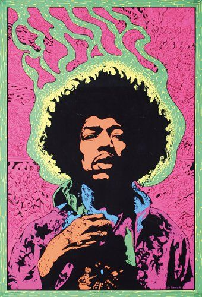

Widely recognized as one of the most creative and influential musicians of the 20th century, Jimi Hendrix pioneered the explosive possibilities of the electric guitar.
Hendrix's innovative style of combining fuzz, feedback and controlled distortion created a new musical form.

Because he was unable to read or write music, it is nothing short of remarkable that Jimi Hendrix's meteoric rise in music took place in just four short years.
His musical language continues to influence a host of modern musicians, from George Clinton to Miles Davis, and Steve Vai to Jonny Lang.
Don't mind if you could listen to one of Jimi's top song back in 1968 just down below.
Click on the video. Take a listen to Jimi's masterpiece.